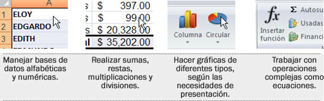

¿Qué es Microsoft Office?
Microsoft Office es un paquete de aplicaciones desarrolladas por Microsoft, y que son útiles para ayudarnos en las actividades del hogar, la escuela, el trabajo y el negocio, entre otros.
Las tres aplicaciones más comunes en todas las computadoras son:
El procesador de textos nos ayuda a escribir y leer documentos.
- La máquina de escribir era una herramienta indispensable para mecanografiar cualquier tipo de escrito.
- Esta aplicación (Word) facilita la elaboración de todo tipo de documentos escritos, como son: cartas, memorándums, reportes, recetas, oficios, invitaciones, tareas, libros y artículos, entre otros.
Antes:
Después:
¿Qué permite hacer el procesador de textos?
Hoy en día, con un procesador de textos se pueden crear o modificar documentos basados en texto, facilita la tarea de escritura al permitir:

El presentador electrónico nos permite transmitir información de manera visual y atractiva.
- Para hacer una presentación se utilizaba un proyector de acetatos o bien hojas llamadas rotafolios.
- Se puede realizar una presentación utilizando una computadora. Con Microsoft Powerpoint es muy fácil realizar la exposición de una tesis, elaborar la presentación de un producto, diseñar el material para una clase, presentar los resultados de una actividad, entre otras cosas.
Antes:
Después:
¿Qué permite hacer el presentador electrónico?
A diferencia del procesador de textos, el presentador electrónico permite transmitir información de manera visual y atractiva, con las ideas principales de la actividad que se esté trabajando.
Las presentaciones pueden incluir efectos especiales para introducir los textos colocados en las distintas diapositivas (pantallas), mismas que pueden ir acompañadas de imágenes, sonidos, formas y gráficos, entre otros recursos.
La hoja de cálculo es un programa que tiene que ver con números.
- Para hacer un cálculo numérico se usaba las calculadoras.
- Se pueden usar hojas de cálculo en la computadora para realizar distintos cálculos, que van desde sumar y restar, hasta utilizar algunas fórmulas y funciones para obtener otros resultados, e incluso utilizar algún tipo de gráficos con esos datos.
Antes:
Después:
¿Qué permite hacer la hoja de cálculo?
Hoy en día, millones de personas prefieren emplear la computadora para realizar tablas con información basada en números, ya que facilita mucho la tarea de:
